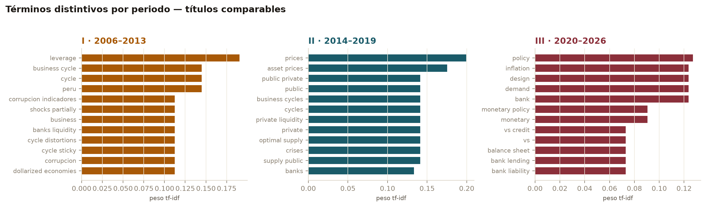
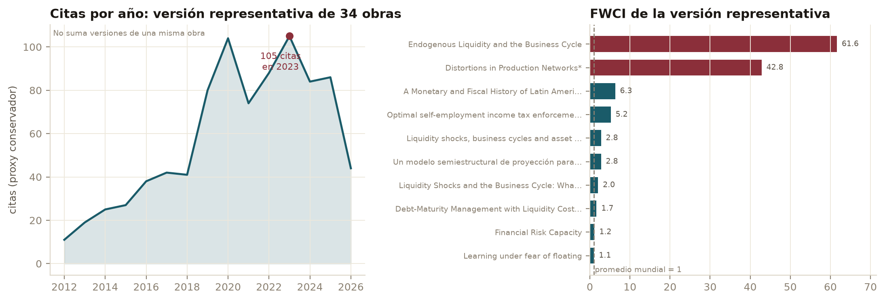
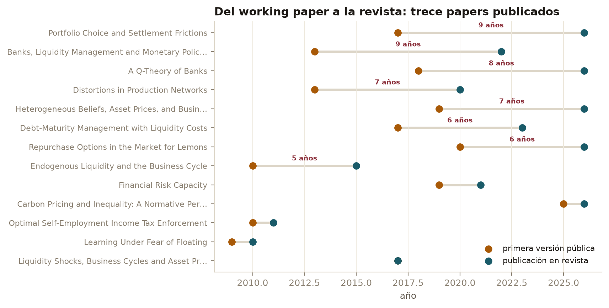
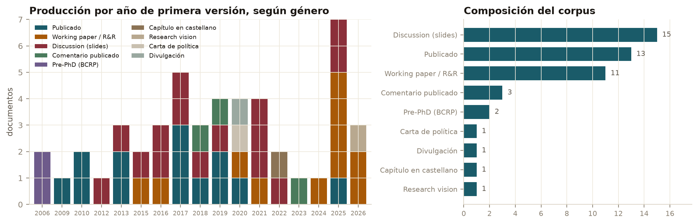

Historia del Pensamiento Económico · UP 2026-02 · Preguntas 3 y 4 · actualización 21/09/2026
De la práctica a una formalización específica
El BCRP aplicó instrumentos de encaje y gestión de liquidez antes de que circulara el modelo de equilibrio general de Bianchi y Bigio sobre liquidez bancaria. La cronología documenta precedencia y una relación interpretativa; no demuestra causalidad, ausencia de teoría previa ni identidad entre política y modelo.
La práctica del BCRP El pensamiento de Bigio Contexto
Qué responde esta cronología
Pregunta 3 · Las ideas fundamentales
La liquidez rompe la irrelevancia del balance
Síntesis propia: en los modelos de Bigio, la liquidez se determina endógenamente. Las fricciones de información y liquidación, los balances bancarios y la oferta de reservas condicionan el crédito y la transmisión monetaria. Wallace (1981) formula condiciones bajo las cuales la composición del balance del banco central es irrelevante; el núcleo monetario de Bigio estudia fricciones que rompen esa irrelevancia.
De ahí se sigue una conclusión más precisa: la tasa de política sigue siendo central, pero no resume por sí sola la postura monetaria. El banco central también altera la oferta y composición de reservas, mientras la gestión de liquidez de los bancos traduce esos cambios en crédito y en múltiples tasas. Esta formulación sintetiza Bigio (2015: 1), Bianchi y Bigio (2022 [2013]: 1), Bigio (2022: 372, 377–379) y Bigio (2026: 19).
Pregunta 4 · Dónde presenta su pensamiento
En géneros distintos cuenta orígenes distintos
En inglés, ante la profesión, su agenda nace en la caída de Bear Stearns en marzo de 2008. En castellano, ante el Perú, nace en 2004 en el organigrama del BCRP. Cuatro años de diferencia, y ninguna de las dos versiones es falsa. El género y el público seleccionan qué parte de su pensamiento sale a la superficie.
La segunda consecuencia es medible sin sumar registros duplicados: 75 registros de investigación de OpenAlex se agrupan en 34 obras canónicas. El linaje de Banks, Liquidity Management and Monetary Policy comienza en 2013 y pasa por Columbia, NBER y Econometrica. En economía, la trayectoria del argumento atraviesa varios soportes; la unidad correcta es la obra, no cada registro.
Evidencia bibliométrica y auditoría final
El notebook fue ejecutado nuevamente el 21 de setiembre de 2026 y sus trece figuras quedaron regeneradas. La evidencia bibliométrica controla la amplitud y la persistencia del corpus; la demostración del mecanismo económico continúa descansando en la lectura directa de las investigaciones.
48
documentos
Corpus final, 2006–2026, con géneros académicos y de política.
34
obras canónicas
Una unidad intelectual por linaje; no se suman versiones de un mismo trabajo.
1 435
referencias auditadas
1 343 aceptadas, 90 corregidas y 2 excepciones atribuibles a la fuente.
Límite de cobertura. Las 390 filas resueltas representan el 27,2 % de las 1 435 referencias. Las 18 operaciones estructurales y las 90 correcciones acreditan una auditoría técnica completa del extractor, no una certificación humana externa ni una base suficiente para redes históricas exhaustivas.

Eje persistente. El vocabulario distintivo pasa de Perú, ciclo y liquidez bancaria a liquidez privada y precios de activos, y luego a banca, política monetaria y balances. TF-IDF identifica vocabulario distintivo en títulos; no prueba el mecanismo causal.

Impacto. Citas por año de una versión representativa de cada obra y FWCI comparado con el promedio mundial.

Circulación. El rezago medio del working paper a la revista es 4,8 años; la mediana es 6 y el máximo observado es 9.

Composición. Los 48 documentos combinan artículos, working papers, discussions, comentarios, documentos predoctorales y textos de política; por eso la respuesta a la pregunta 4 no puede reducirse a las publicaciones finales.
Hipótesis, y qué pasó con ellas
Hipótesis
Enunciado
Estado
Fuentes
Rossini, R. (2016). «La política monetaria del Banco Central de Reserva del Perú en los últimos 25 años». En G. Yamada y D. Winkelried (eds.), Política y estabilidad monetaria en el Perú. Homenaje a Julio Velarde, pp. 23–37. Lima: Fondo Editorial de la Universidad del Pacífico.
Quispe, Z. y R. Rossini (2010). «Monetary policy during the global financial crisis of 2007–09: the case of Peru». BIS Papers n.º 54, pp. 299–316. Basilea: Banco de Pagos Internacionales.
Bigio, S. (2022). «Política monetaria: una nueva perspectiva». Lima: Fondo Editorial de la Universidad del Pacífico, pp. 371–382. Charla en homenaje a Renzo Rossini. Ficha bibliográfica completa del volumen pendiente de verificación.
Bigio, S. (2026).Liquidity and Macroeconomics: a vision and my research agenda. Ensayo de agenda, agosto de 2026.
Bigio, S. (2019). Comentario a C. Martinelli y M. Vega, «The Monetary and Fiscal History of Peru, 1960–2017». Becker Friedman Institute, Universidad de Chicago.
Bigio, S. (2026).Curriculum vitae, agosto de 2026. Departamento de Economía, UCLA.
Elaboración propia (2026). Fase 2b: extracción de las bibliografías de los nueve papers del núcleo de dinero y banca del corpus — 178 412 caracteres — y recuento de autores por número de bibliografías.
Montoro, C. y R. Moreno (2011). «The use of reserve requirements as a policy instrument in Latin America». BIS Quarterly Review, marzo de 2011, pp. 53–65.
OpenAlex (2026). Autor A5024020324 (ORCID 0000-0001-5932-0736). Archivo bruto: 89 registros. Tras excluir 12 datasets y 2 softwares: 75 registros de investigación agrupados en 34 obras canónicas. Las seis obras principales, incluyendo sus 14 versiones, reúnen 774 citantes únicos. Datos consultados el 14 de setiembre de 2026 y reutilizados en el notebook final.
Bigio, S. (2020).A Concrete Policy Response to the Covid-19 Crisis. Carta abierta, 15 de marzo de 2020.
Perú y BCRP (2020). Decreto Legislativo 1455, 6 de abril; BCRP, Reporte de Inflación de junio, recuadro 5: Circular 017-2020-BCRP y primera subasta de Reactiva Perú del 23 de abril.
Elaboración propia (2026), auditoría final. Notebook regenerado el 21 de setiembre: 48 documentos, 34 obras canónicas y 1 435 referencias. Auditoría técnica: 1 343 aceptadas, 90 corregidas, 2 excepciones de fuente y 18 operaciones estructurales. Resolución OpenAlex: 390 filas, 320 identidades distintas y 1 045 filas sin identidad aceptada.
Cómo leer las fuentes. Los números de página de [1], [2], [3] y [8] son los del volumen impreso, verificados contra los folios de cada PDF. Las cifras de impacto y de instituciones citantes provienen de una sola descarga de OpenAlex y cambian con el tiempo. Los recuentos marcados como «elaboración propia» se hicieron sobre el corpus del proyecto y son reproducibles con los archivos de data/.
Corpus. 48 documentos de Saki Bigio, 2006–2026, 1 995 páginas y 3,42 millones de caracteres: 13 papers publicados, 11 working papers, 15 discussions en diapositivas, 3 comentarios publicados, 2 documentos de trabajo del BCRP previos al doctorado, una carta de política, una charla de divulgación, un capítulo en castellano y un ensayo de agenda.
Auditoría. La candidata final contiene 1 435 referencias: 1 343 aceptadas, 90 corregidas y 2 excepciones atribuibles a la fuente. OpenAlex resolvió 390 filas —320 identidades distintas— y dejó 1 045 sin identidad aceptada. Esta cobertura permite documentar la calidad del proceso, pero no construir redes exhaustivas de co-citación.
Advertencias. El BCRP no actuó sin análisis: Rossini señala que sus cambios tuvieron sustento analítico y cuantitativo [1, p. 23]. El Perú fue temprano, no único: Montoro y Moreno estudian también Brasil y Colombia [8]. El modelo P07 no trata dolarización ni el caso peruano, y cita antecedentes teóricos como Poole (1968); por eso la cronología sostiene solo que la experiencia peruana precedió y ofrece contexto para una formalización específica de Bigio, no que exista una causalidad intelectual demostrada.
Documento de trabajo del trabajo grupal 01. Elaborado por Alejandro Ventura. Actualización final: 21 de setiembre de 2026.